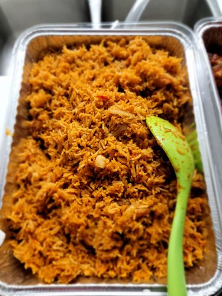

Jollof Rice

Description
This is a recipe for classic Nigerian Jollof rice.
Ingredients
For blended mix - stew base
- 3 medium bell peppers
- 5 pieces of tomato (Roma)
- 2 scotch bonnet pepper(to taste)
- 2 red onion bulbs
Full list
- 3¾ cups (750g) long grain parboiled rice
- 2-3 cups stew base
- Chicken (whole chicken, drumsticks or chicken breast)
- Pepper and salt (to taste)
- 2 medium onions
- 3 Knorr cubes
- 2 teaspoons thyme
- 2 teaspoons curry powder (Nigerian curry powder)
Steps
- To prepare the stew base, wash and blend the fresh plum tomatoes, long red peppers, scotch bonnet peppers, onions and garlic.
In a pot, heat up some vegetable oil, add in some chopped onions and tinned tomato puree. Stir fry the tomato
puree in the oil for about 5 minutes
- Add in the blended plum tomatoes and pepper mix fry at very low heat until the oil separates from the stew.
Taste it to make sure that the raw tomato taste is gone.
- Cut the chicken into smaller bits and wash. Add to a pot, season with curry, thyme,
Knorr/Maggi cubes and 2 bulbs of onions (chopped) and let it steam in its own juices on low heat.
After about 10-15 minutes, add some water to cover the chicken and let it cook till done. It's important to
have enough stock to cook the rice so that it is not supplemented with water. Drain the stock from the chicken and set aside
Fry or grill the cooked chicken to give it a beautiful golden colour.
- Parboil the rice, rinse the parboiled rice and sieve to drain
Cooking Directions
- Pour the chicken stock and the tomato stew into a sizeable pot and set to boil
- Add the drained parboiled rice and taste for spicing.
You can adjust your spices with extra maggi, salt, curry powder or pepper to taste
- The stock level should be the same level of the rice. This is to ensure that all the liquid dries up by the time the rice is cooked.
- Cover the pot with some foil to keep in the steam and leave to cook on low to medium heat. This way the rice does not burn before the water dries up.
- If the rice was parboiled, the rice should be done by the time the water is dry. Taste to confirm. Otherwise,
you can add more water and reduce the heat to prevent burning. Keep cooking till done.
- To give it a little boost, once the rice is cooked, you can chop up some fresh onions and tomatoes and it into the rice with some butter and cover the
pot. Let the steam to heat it up, stir and take the pot off the cooker